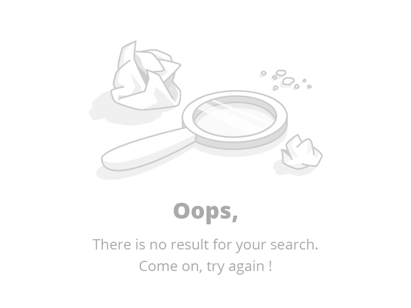

<section id="search-section">
  <div class="container">
    <form class="input-group mb-3 my-4" #searchForm="ngForm">
      <input
        ngModel
        name="searchValue"
        #searchValue="ngModel"
        type="text"
        class="form-control me-3 rounded"
        placeholder="Search and explore...."
        aria-label="Search"
        aria-describedby="button-addon2"
      />
      <button
        (click)="search(searchForm.value.searchValue.toLowerCase())"
        class="button_Primary btn btn-outline-secondary rounded"
        type="submit"
        id="button-addon2"
      >
        Search
      </button>
    </form>
    <h5 class="section-title my-4">
      Search Results for: <span class="keyword">{{ keyword }}</span>
    </h5>
    <div
      *ngIf="movies.length == 0"
      class="no-data d-flex justify-content-center align-items-center"
    >
      
    </div>
    <div *ngIf="movies.length > 0" class="cards">
      <div class="row">
        <div *ngFor="let movie of movies" class="col-lg-2 col-md-4 col-sm-6">
          <app-movie-card [movie]="movie"></app-movie-card>
        </div>
      </div>
    </div>
    <nav *ngIf="movies.length > 0" aria-label="Page navigation example ">
      <ul class="pagination justify-content-center">
        <li class="page-item">
          <a class="page-link" (click)="previousPage()"
            ></a>
        </li>
        <li *ngFor="let htmlPage of pages" class="page-item">
          <a class="page-link" (click)="pagination($event)">{{ htmlPage }}</a>
        </li>
        <li *ngIf="page > 5">...</li>
        <li *ngIf="page > 5" class="page-item">
          <a class="page-link">{{ page }}</a>
        </li>

        <li class="page-item">
          <a class="page-link" (click)="nextPage()"
            ></a>
        </li>
      </ul>
    </nav>
  </div>
</section>
